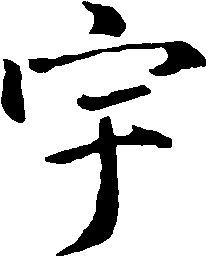

 
Zhu, Yu-Feng
Email: mike323zyf@gmail.com
I graduated from University of British Columbia co-supervised by Robert Bridson and Chen Greif.
I am interested in problems involving geometry, physics, optimization and programming.
Zhu, Yu-Feng
Email: mike323zyf@gmail.com
I graduated from University of British Columbia co-supervised by Robert Bridson and Chen Greif.
I am interested in problems involving geometry, physics, optimization and programming.
Publications
-
Blended Cured Quasi-Newton for Distortion Optimization
-
Planar Interpolation with Extreme Deformation, Topology Change and Dynamics
-
Simulating Rigid Body Fracture with Surface Meshes
Tech Reports
Graphics Gallery


Pour l'honneur de l'esprit humain.